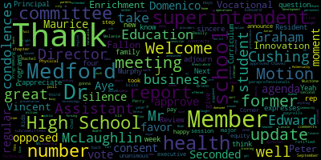
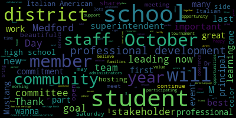
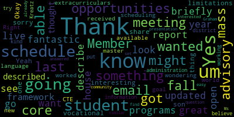
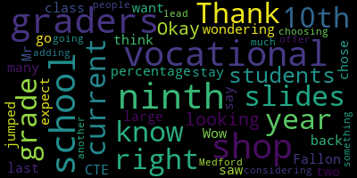
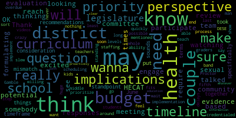

[Lungo-Koehn]: an executive session. I'm happy to announce that by unanimous vote, we took a major step to pay equity for our Kids Corner and paraprofessionals. So that was a 7-0 vote, and those contracts have been ratified, which is great news. We also want to welcome back Domenico Bruno and Melanie Chavez. Yes, thank you for being here, our student reps. We're gonna move on to the consent agenda, bills and payrolls, as well as regular school committee meeting minutes, September 19, 2022. Motion to approve? Motion to approve. Seconded by member Hays. All those in favor? Aye. All those opposed? Consent agenda is approved. There are no reports of subcommittees. We have a number six report of the superintendent. Superintendent's updates and comments, Dr. Maurice Edwards.
[Edouard-Vincent]: Thank you, Mayor. Good evening. First, I would like to acknowledge our fellow Floridians who have a long road ahead of them due to the devastation caused by Hurricane Ian. And for the more than 100 plus people who have already passed away as a result of the hurricane, I would like us just to observe a moment of silence
[Lungo-Koehn]: but you could rise for a moment of silence. Thank you.
[Edouard-Vincent]: Also, since we last met, At the high school, both on the vocational side, there is a beautiful memorial garden honoring many members of our staff who have passed away over the past several years. And I wanna just thank member Hays, former member Vanderkoed, Mayor Brianna for supporting that event. Principal Fallon, who's here and Principal DeLava, who also with our CCSR students, CCSR leaders who coordinated the beautiful ceremony to honor the lost members of staff. So I just wanna thank them for such a beautiful ceremony. And when you're at the high school complex, when you go into the main entrance, of the vocational side, you can see the beautiful garden. Also on the west courtyard side of the high school, you can see the continuation of the garden on both sides of our campus. So I wanna just share some updates and remarks. First, we are in the month of October. October is a symphony of permanence and change, said the author, Bonaro Overstreet. The color of the leaves are changing and providing vibrant colors in the Middlesex Fells Woods, which abuts Medford High School, which beautifies our landscape. I want to open with a very large congratulations to our Mustang Marching Band and our Color Guard on hosting the New England Scholastic Band Association competition last Saturday at Hormel. 12 school districts competed and the Mustang band took home second place. Additionally, our color guard took home first place. So we're very proud of them. They will be continuing to compete in many more competitions this season. Great job. Keep up the great work Mustangs. Last week, we also had 15 Italian students accompanied by Dr. Bobo, Coordinator of World Languages, Ms. Canetta, Ms. Shalafo, Ms. Ogudari, and former World Language Director, Ms. DiCarlo. They attended Puccini's famous opera, La Boheme, at the Emerson Colonial Theater. According to Dr. Bobol, our students studied this opera in class and later, as in the tradition of the world language department, we brought our students to witness the actual opera. I hope this tradition will always continue at Medford High School. Also, our great community partner, Tufts University, not only held an incredible community day event yesterday with over 60 nonprofit tables that had information, free food and games, they have also informed us that their school of medicine hosts the Sherwood Clinic at Cambridge Health Alliance on Canal Street in Malden. from Saturdays from 1 to 4.30. No insurance is necessary. An interpretation is available there. Services include blood pressure and glucose screenings, nutritional counseling, medical management options, and school physicals. So if you're out there and trying to get an appointment, please take advantage of that. I want to remind the community that this Wednesday, October 5th, there will be no school. as our Jewish students, staff, and neighbors celebrate Yom Kippur, or the Day of Atonement. May I say to our Jewish friends, Gamar Fatima Tovah, which means, may you be sealed in the book of life. I really appreciate the quote of the late Rabbi Jonathan Sachs, who once said, the most important lesson of the high holidays is that nothing, nothing is broken beyond repair. It is never too late to change and to be better. Next Wednesday, October 12th, Medford CPAC will be hosting their meeting by Zoom. On the agenda is to meet the administrators of the central administration and the special education department, as well as their general meeting. So six to seven is their general meeting and meet the administrators starts at 7 p.m. This coming weekend, as you know, we are now well into fall. And so during this season, there are lots of fairs, fundraisers, social events, including the following. October is breast cancer awareness month and the Mustang girls volleyball team will be hosting a pink out tournament. to raise money for breast cancer research the weekend of October 22nd and 23rd. The team is selling t-shirts ahead of the tournament at a cost of $20. Track down a volleyball team member to grab a t-shirt to support this important cause. For those of you who may have Columbus Day or Indigenous Peoples Day off, please consider coming out to support the Medford Family Network at the 11th Annual MFN Golf Tournament hosted by Yokey Restaurant. The tournament is held at Sagamore Springs Golf Club in Linfield. The cost is $150 per person. You can sign up on the Yokey website at yokeyrestaurant.com. The MFN are also actively seeking donations for prizes for the raffle. For further information, please reach out to Ms. Marie Cassidy. Saturday, October 15th, from 12 to three, brings the return of the Harvest Your Energy Fair behind the McGlynn School. And on Sunday, October 16th, from 11 a.m. to 4 p.m., the Brooks PTO will be hosting the annual Fall Fest. It's a fun time for all. I strongly encourage families to come out to both events on Saturday and Sunday. It'll be lots of fun, lots of prizes. Also, again, next Monday, there will be no school. It's October 10th for Indigenous Peoples Day, Columbus Day. October is also Italian American Heritage Month. It is celebrated every year to honor and recognize the centuries of achievements, successes, and valuable contributions of Italian immigrants and Italian Americans. The first Italian American Heritage Month was celebrated in 1989 by a special proclamation of both Congress and President George H.W. Bush. Over 5 million Italians immigrated to the United States between 1820 and 2000. Italians are the fifth largest ethnic group in our nation, and one of the many nationalities that have made Medford home. To our Italian-American friends, and forgive me if I botch it a little bit, Feliz Mese del Eredita Italo-Americana. Happy Italian-American Heritage Month. And I close with a poem. It says, it's called Hello, October. Oh, one of the best things you can do for yourself is taking time to learn and grow. Once you give yourself patience, you become your best friend and the empathy, self-kindness and resilience are what you need to grow. Thank you and have a good evening.
[Lungo-Koehn]: Thank you. Thank you, Dr. Edouard-Vincent. Number two, we have report on chapter 74. Vocational Programming at Medford High School in the 2022-2023 school year, Dr. Peter J. Cushing, Assistant Superintendent of Enrichment and Innovation, and Mr. Chad Fallon, Principal Director of Medford Vocational Technical High School Programs. Welcome.
[Cushing]: Thank you, Madam Mayor and members of the school committee for this opportunity to present the annual presentation on Chapter 74 programming. As Mr. Fallon will detail in his presentation, the vocational school is seeing great expanses and expansion within its programs and is doing a really great job supporting our students with these hands-on, real-world learning applications. Mr. Fallon.
[Fallon]: Thank you. Good evening. Nice to see everybody. I'm gonna give you guys an update on what we've been up to over the past year. Actually, when I was looking at my presentation from last time, I'm not sure that we did this last year because of, I'm not sure I couldn't find it. I found it two years ago. It was all about remote learning. I was happy to kind of turn the page on that. I wanna introduce some new staff this year that we hired. First off, his name is Andrew Theobald, and he's in the picture to the right, actually. He is our new automotive technology instructor. And then we also hired a metal fabrication instructor, Mr. Curtis Jackson, who's on the left. When I went into the space to take pictures of the teachers, the students were more than happy to jump into the picture with them. So I just let it happen. So that's some of the automotive and some of the metal fab students, two great additions to our team. We have been doing some renovations. You know, no report is usually complete on my end in case I haven't broken down some walls. So I'm gonna fill you in on what we've done. Cosmetology, as you know, the salon opened a year ago, but we finally moved the grade nine and 10 classroom up to the room next to the salon, which actually already had glass windows installed. So now the freshmen and sophomores can look into the salon. The two teachers are together now. We renovated our Make Way for Kids and our early childhood education program, the Make Way for Kids program, which is a nursery school for little tykes on three days a week in the morning. We moved them from the cosmetology space downstairs to a ground level floor room. And that's a picture that you see there that's completely redone with new carpet walls, window treatments, and some plumbing. And you can go to the next slide. The electrical department, As you know, there's booths that the students work in. They were splintered and old, so we needed to replace all the booths. So that was a project that the carpentry students took on. They removed all the booths on the left side of the shop and replaced them with brand new booths for the students to work in. The room on the right, on the top, is just a picture of the cosmetology-related room. The teacher did an incredible job getting it to where it is now. You can't really see it, but off in the back are the windows that look into the salon. And then the bottom right is a picture of graphic design. It was completed last spring. And these are two rooms that have been combined. That's the former cosmetology space, which is now custom desks that were built by the carpentry students and new computers in that space. The Mustang Mall also moved to a new location on our side of the building. And that's where King Falls is. Quick report on the Skills Capital Grant. If you remember correctly, the Skills Capital Grant is awarded to vocational technical schools and this was our third time receiving it. This time we had just under $365,000 and this was directly funded for the Construction Craft Laborers Program. as well as our other construction trade programs, electrical, carpentry, and metal fabrication. That's just one picture on the left of many pieces of equipment that we got. One of my students here to the right who's in the program could tell you more. We completely outfitted the shop with the type of materials that students would need out in the workforce. So we have that, we have a couple pickup trucks, we have a lowboy dump trailer, we have equipment inside that won't even leave the shop, and then we have other stuff that we're using on job sites. So we're really happy about that. And this was, I just have to do a special thank you to the teachers in that program, Mr. Danny Kelly, Mr. Ralph Taleva, Mr. Larry Brown, and of course to my amazing administrative assistant Gina Citrano, who kind of pulled it all together for us on the budget end. So thanks to that team. We also were recently awarded a Mass Life Sciences grant that we applied for. just under $120,000. $20,000 will be put towards professional development and the remaining is for supplies and materials for our biotechnology program. Can't really see it, but what you can see on the left is kind of a over the last six or seven years, the enrollment shift in our career and technical education pathway. So you can see it's steadily rising up. Nearly 45% of the students in the high school complex right now are on a CTE pathway. On the right, that figure shows you grade nine. So blue would be CTE grade nine, and the orange is the overall enrollment. So this year, for example, it's about 60-something percent of the freshmen right now at the high school are choosing CTE Exploratory. If we look at last year, I think there was, I think we had about 250 students go through Exploratory and about 160 of them stayed on as sophomores. So that kind of gives you an idea, you know, the blue is creeping up. So that last column on the right shows that there's know, essentially any student who wants to participate in CTE Exploratory is able to do so at night school. We continue to work with our partners in our workforce development initiative. We have cooperative education that's going strong. We have a new Mr. Grinley, who retired the second time from us just in the spring. So now between myself and Alice Beth Fitzpatrick, our assistant director, we're working with a teacher who's just recently been licensed for co-op in the state of Massachusetts, Ms. Holly Farnham-Cassebon, and she is going to be our co-op coordinator as a stipend position. Those, that kind of word out there is just many of the partners that we work with now and the many of the jobs that our students are out on. So we just wanted to make sure that those are front and center because they support us just as much as we support them. For our professional development this year, our focus has been built around a lot of the work we've done with the REVIS training in support of five core actions. We started the year by saying content is important, but we're really looking to, when we're in the classrooms, we're gonna be looking for how you're building those positive relationships with students. So that was an agreed upon look for that we decided as administrators, what we're gonna look for when we go into classrooms. also spent a lot of time on building connections. At the beginning of the year, we sent these kind of stress ball type building blocks to the whole school in an effort to remind people that we are building connections for both sides. So kind of that being our theme, building the positive relationships with students, which ties right into social-emotional learning, and then some curriculum work, because a lot of the standards for the Mass Vocational Frameworks have changed or been revised. So we're going to be spending this year really aligning our curriculum, making sure teachers have a clear understanding of what they're teaching and students know why they're learning it.
[SPEAKER_00]: Questions?
[Kreatz]: Yes, yes, I want to thank you for the report. It was great. And last year I got to go to the live open house and see some of the updated programs. They look fantastic. So I just wanted to know if you would briefly be able to describe what the mass core framework is. I know I got it described in an email and I just thought it was very interesting. And if you were able to share it, if you could do that. So mass core? Yes.
[Fallon]: Well, mass core is the state. We don't, I mean, math core doesn't really fit into my piece of the puzzle. You mean the frameworks that we use? The frameworks, yes.
[Kreatz]: Yeah, sorry.
[Fallon]: So just like an English or math curriculum, there are frameworks for every vocational technical program that's offered. A lot of them have been revised and it takes years to be done. So now like the automotive curriculum is new. So we're gonna need to figure out how that looks when we're using it in theory. So for our frameworks, oftentimes it's a lot of documentation. There's many different standards within each program's frameworks, one being embedded academics. So with every program we have, there's a crossover of literacy and numeracy skills. So we need to make sure the teachers are comfortable doing that. There's a safety component and there's a technical content, which everyone has. And that's basically the part of the frameworks that tells the teacher what is it that should be taught by the time these students leave high school.
[Kreatz]: Thank you. And do you know when the fall advisory meeting is going to be? Like, is there going to be, like, in the fall advisory meeting?
[Fallon]: Yes, November 8th. You'll all be getting a save the date.
[Kreatz]: Okay, thank you. And one last thing. When my son was at the vocational as a student, Um, there was some limitations with the scheduling, um, with extracurriculars in world language. And I was just wondering, um, if, if that's going to be something that might be worked on into the schedules where, um, those opportunities might be more available for the students, for the CTE students. If we can get a new master schedule, that's the goal. Right. And that's what I know. I had received some information in an email, but I just wanted to kind of just put that out there that that's something that I believe the district, the administration's working on to try and get the schedule and get that in there.
[Fallon]: Yeah, we've really done all the band-aiding we can do at this point. So yes, we are ready for any schedule.
[Lungo-Koehn]: Thank you. Thank you. Really appreciate it. Member McLaughlin and Member Mustone.
[McLaughlin]: I just wanted to say thank you for the rapport. And it was really good seeing everyone at curriculum night the other night and the great turnout and the increased attendance and interest in our vocational school. So I know that you guys have all done that. or collectively, it looks great over there. I hope people are taking a tour around. I'm just excited by the opportunities for our students. So thank you. Thank you.
[Mustone]: Thank you, Mr. Fallon. I was just wondering, I saw, I don't know if you want to go two slides back. So last year there was 199 ninth graders who did CTE, right? It jumped to 269 this current year for ninth graders.
[Fallon]: I think last year was more than one, but was it, did it say 199? But okay.
[Mustone]: How many 10th graders then chose to stay in the vocational school? Wow. So that's a very large percentage.
[Fallon]: Our largest ever. It was like, it was one of those moments that we were like excited, but also frightened because it was like, okay, we get, we need to make sure we have
[Mustone]: So 160 from say 200, I don't know who has the slides, but so then do you expect, so this current ninth grade class is 269. Do you think you'll get 200 students then choosing to the vocational school in 10th grade?
[Fallon]: If we keep trending the way we are, then the data would say yes.
[Mustone]: So then would that lead you to, are you considering adding shops?
[Fallon]: Yes and no. We have a constraint right now, and that's the building space. There's no room. Yes, this program we'd love to offer, but we're not at the point yet that we don't have enough seats in our current programs for our students. With the increase in enrollment, and actually everything lands really nicely because we still have seats in two or three different programs. But absolutely, in the future.
[Mustone]: And then do we have any students in Medford who are going to other vocational schools because they're looking for a shop we don't offer?
[Fallon]: Yes. One to Minute Man for plumbing and one to Minute Man for horticulture, but she's a junior. So it's a two-year commitment for us.
[Mustone]: Okay. So it's not like there's something out there that people are looking for at another shop?
[Fallon]: No, just plumbing. Plumbing would be the next one I'd open because that's, and you know that when a parent comes to me and expresses their concern, I'm like, well, you should go to Minute Man 100% because they have a program. So yeah. All right, that's great. We had a few that went to Essex, but that person graduated and we had another one from an event. We usually average about one a year.
[Mustone]: Okay. All right. Thank you very much.
[Lungo-Koehn]: Thank you, Principal Fallon and Dr. Cushing.
[Cushing]: I just want to also add that the cosmetology renovations, as has been mentioned previously, but with such a generous donation, Medford alumni Charles Hoth named it in honor of his mother Priscilla Hoth. And so it's just a really great member of the community coming back and putting their wallet in full support of our students and really developing an amazing space for them to work. Thank you.
[Kreatz]: Thank you. Thank you.
[Lungo-Koehn]: Thank you. We have Our third report, Health Education Curriculum Review. Dr. Peter J. Cushing, Assistant Superintendent of Enrichment and Innovation, and Ms. Rachel Perry, Director of Physical and Health Education. Welcome. Just give me one second to pull up the presentation.
[Cushing]: All right, once again, good evening, Madam Mayor and members of the school committee. I'm happy to stand before you tonight with Rachel Perry to discuss the health education curriculum review process and the team that will be created to conduct this year long review of this. Rachel brought this to me a few weeks ago and upon review really seemed like the way that we should be going. So I'm gonna turn over to Rachel now for some of our slides.
[Perry]: Good evening, everyone. Thank you for having us. So to start, what I'm going to talk a little bit about is the history of health education in Medford. Pre-2013, we were using the second step curriculum at the elementary level and the body shop curriculums at the secondary level. Michigan model skills-based health curriculum was piloted and chosen to be used at both levels to replace those out-of-date curriculums. In 2013-2014 school year, Michigan model was started at the high school level, and in 14-15, we started that at the middle school level. I started the position in the 2015-2016 school year, and we looked at the Michigan model SEL units and piloted that in 2015 and 16, and then we adopted that in the 2016-17 year for the elementary schools. At that point, what I did with my staff is we put together our curriculum, we aligned it to the state and national standards, looking at the state standards, those are from 1999, those were very old, so we really started to look more at the national standards and we aligned what we were doing at that time to the national standards and we found that there was a gap in the sexual health. piece. We added that to the high school curriculum in 2017 and 2018, using an abstinence-based sexual health curriculum. And in 2021-22, it was added to the middle school curriculum. So those are the recent updates. What we're looking to do now, looking at, we've been using the Michigan model starting a little bit around 2013, right after that. It's almost been 10 years, so it's time to really take a look at what we're doing and evaluate that. In order to do that, we're taking a look at the HECAT, which is the Health Education Curriculum Analysis Tool. And this is an assessment tool developed by the Centers of Disease Control and Prevention in partnership with health education experts from state and local education agencies. schools, colleges, and universities, and national organizations. The purpose is to provide state, regional, and local education agencies with a common set of tools to assist with the selection of development of health education curricula. And if you look at the bottom of that slide, it goes over exactly what topics we'll be evaluating. The HECAT draws upon synthesis of research and criteria based upon findings from the Center of Disease Control's guidelines for school health programs, which identifies common characteristics of effective programs in priority health topic areas, the national education, health education standards, guidance from the U.S. Department of Education Office of Safe and Healthy Schools, expertise of CDC health and behavioral scientists and health education specialists, and expertise of health education researchers and practitioners from the field. Part of the HECAT process steps. The first one is looking at the decision tree recommendations. You don't have that before you, but I've already evaluated that. And we already have a scope and sequence in place. We already have a curriculum. The next step it asks is if the curriculum is aligned with the HECAT and it is not. So at that point, what we would need to do is perform an analysis using the HECAT of our current curriculum. From there, next we would identify a health education curriculum coordinator, which I believe we already have. That would be me. And from there we form a health education curriculum review team and we obtain put together our curriculum and our assessments, and orient the members of the team. We'll evaluate what we're doing, looking at our curriculum and all of our assessments. We do a review, and then we develop a timeline. After the curriculum analysis is complete, we convene a meeting and review and discuss the completed analysis, reviewing scores, and we rank the curricula. From there, we make curriculum recommendations and we assign curriculum revisions and supplementations and improvements to a writing team. From there, we make decisions on where we're gonna go with that. Looking at our timeline that we've put together, we'd like to use October this month to create that committee, have the committee meet from November, 2022 through May of 2023, and then complete our evaluation, submit recommendations by June of 2023. And then implementation of the recommendations, it would be implemented when we were approved and budgeted.
[Cushing]: So before you is a table of people who might serve on the PCAP review process. So school and district curriculum specialists, school or district administrator, school board members. So at the next meeting, hopefully this board would be able to recommend a member who would be willing to serve. Elementary teacher, middle school teacher, high school teacher. And I don't have to read them all to you, you can read them. It's a comprehensive committee to really take an in-depth look at our health curriculum and make recommendations based upon the research and the science. that is out there now and hopefully based on the Massachusetts curriculum standards, which here's a timeline from a DESE presentation. This is a source from a June 2019 Board of Elementary and Secondary Education. The expectation was that the draft results would have been out sometime in winter 2019, winter 2020. for a variety of potential reasons. Those have yet to be released and a board vote of the board of elementary and secondary education has not taken place. I received a phone call from the department of elementary and secondary education today saying that they're still trying to schedule these standards to be reviewed. But given that we're now 23 years on, and if I'm correct, these are the last major curriculum standards that have not been revised and implemented in the cadre of curriculum frameworks. These are the next ones to become hopefully reviewed and implemented. This committee will have this work done within the school year, and we'll look to create a very well-versed and broad ranging committee to help support this work. And we will take any questions or comments you may have.
[Lungo-Koehn]: Member McLaughlin, Member Graham, Member Kreatz.
[McLaughlin]: Thank you. Thank you for the presentation. It's definitely an ambitious schedule. It looks like you guys are going to be really busy. I did have a couple of questions about how the PCAT review team will be selected, how we'll be addressing diversity and equity for the selection of the team, and also Specifically, I don't see a family representative on there, and I just wanted to make that recommendation. And I also would make a recommendation for a special education representative and a EL representative, especially as we're thinking about how items translate, how words have varying meanings among different cultures. And I would especially think about if we could differentiate instruction and universal design for learning for students with disabilities, as you can imagine, especially around sex education, puberty, that sort of stuff. I certainly have resources that I can share with you around some other curriculums that we've experienced that have been great, but definitely want us to be proactive as we're thinking about how we're differentiating that information for all of our students. Thank you.
[Lungo-Koehn]: Member Graham.
[Graham]: Thank you. I'm really excited to see this. I know we've talked about this a couple times. A couple of questions I had. If somebody would like to participate on the curriculum review team, who do they reach out to? And how will the community that may not be watching the school committee meeting know to engage in this?
[Cushing]: We're going to put together a wide range of communication and request people to submit their qualifications to be part of the committee.
[Graham]: OK. And does the HECAT require that the sexual health evaluation be evidence-based?
[Cushing]: In the materials that I have reviewed, and I'll also let Rachel speak to this, there's an overall comprehensive look at having them be evidence-based. And that comes up frequently in the documents that I've reviewed. And like you know, printed out, the HECAT is about this thick. It is extraordinarily comprehensive, so to say that we've reviewed all of it. would be a misnomer, but they do have several supporting documents that help to break it down, but I'll let Rachel add anything else.
[Perry]: So the HECAT is based on the national standards, which is evidence-based and comprehensive.
[Graham]: And the other question I had looking at the timeline, just thinking about the potential budget implications, if you all aren't formulating your responses or your recommendations, until the June timeframe, it sounds like there just may be a mismatch in terms of what we may or may not need from a budget standpoint. And I didn't know if you took that into consideration when you put the timeline together or if you could. And a couple of the things that I think about really specifically are from an implementation perspective, the middle school students who don't get health because they go to band. you know, the need for health teach credentialed health teachers that we may or may not have in the district at all levels and how that fits into our staffing and our scheduling. And I just feel like there could be like a whole slew of implications from a budget perspective that we would want to be able to prioritize as quickly as possible, because I think this is long overdue. if we never show those crazy videos to the fifth graders, again, from Proctor and Gamble, it will be too soon for me. So I just wanna make sure that there's nothing at the end of this process that sort of delays our ability to implement. Because I do think, at least for me, this is a huge priority for the district. And it is, as you mentioned, like the last man standing around curriculum. And I think we may not be willing to wait for the legislature, for DESE, for the legislature to step in and say, this has to be a priority for districts. So I think our kids need this information and this education. And I wanna make sure that whatever we can do to clear the path, that we're doing it proactively for you.
[Perry]: Yes, I think that as we're going through this process, I kind of already know where the gaps are. I think as we're going through the process, I'll be able to report back before budget to say, this is what we might be needing. So we can kind of give you some kind of indication as to where we're at.
[Lungo-Koehn]: Awesome. Thank you.
[Kreatz]: Member Kreatz? Yes. Thank you for the presentation. And I had a similar question that Ms. Graham had, was how do interested community members you know, find out about opportunities and you've already answered it. So I'm all set. It was easy. Thank you.
[McLaughlin]: Yes. Member McLaughlin. Just what's the time commitment. I know it said it's two times a month that you guys plan on meeting. How long are those meetings going to be?
[Cushing]: I would say that just given they're probably going to be about two hours long each, and then there's going to be an expectation for community members and members of this committee to do research to work in between. As well There's no way that we would be able to conduct this meeting this body of work within just two hours Within four hours a month. I should say so myself and Rachel will also be doing a considerable amount of work to help support the committee, but The reality is is that I would say you're looking at four hours plus whatever time individuals need on their own to Do the pieces and the tasks that are necessary?
[McLaughlin]: And just lastly, I'm wondering if there's any sort of pediatrician or any role like that that you guys have considered for?
[Lungo-Koehn]: I think that might fall under community health care providers. I just wanted to make sure that I got the terminology. Yeah. OK, great. Thank you. We have our student rep, Domenico, who has a question.
[Dominico]: Hi, so as a vocational student, my schedule was limited enough that I can't have a health class. Are there any, are you guys gonna look into options for possibly revamping the online program or offering education to students who can't really fit into their schedules?
[Perry]: I think after the HECAT, after we do the evaluation, we also do need to take a look at scheduling and maybe look at an online option for students that are in that same position.
[Cushing]: Also, it's a significant goal of the high school leadership and district leadership to take a comprehensive outside look at our schedule and to see the ways that we can really improve and move our high school schedule forward. So that what I need to be clear about this, while everybody can't have everything, we need to do a better job at making sure that those priority elements are there. Unfortunately, that in high school scheduling, there are difficult choices that may have to be made. I would say that health should not be falling into the category of difficult choice, but we need a comprehensive examination of our high school schedule and some barriers to move out of the way to make sure that that can happen.
[Lungo-Koehn]: And to piggyback on that, it was that I think member Graham announced it as well. If you have banned in the middle school, you can't take health. So is there any option for parents to use a curriculum at home or for students in high school or at the Boak to take any sort of health education or learn anything about what would be taught in health during the day?
[Perry]: So like I said, I think once we evaluate this, we can come up with an online program that does meet all the standards, and we can provide that as well if our off schedule can't meet those needs.
[Lungo-Koehn]: But nothing is offered can be off right now. Thank you. Resident.
[Adamak]: I just name an address for the record, please. I'm sorry, name address for the record. Oh, sure. I'm Katie Adamak, and I live at 14 Walcott Street. I have a son in the sixth grade at the Angers Middle School, and I'm also a public health researcher. I study sexual reproductive health, and sexuality education is actually my career. So this is something that's kind of near and dear to my heart, and I'm really, really excited that you guys are taking a look at this. And I've been underwhelmed by what I've heard about the sexuality education in Medford schools. I will say, I can't really speak to, like, larger health education as it is. I am really excited to hear that you guys are assessing curricula using the eCAT. I think the eCAT is an important tool. However, the curricula that you're assessing and selecting those curricula, I think in a lot of ways is more important. So you can run any curricula through the eCAT to see if it's an effective curricula. But, you know, there's and things in all these different curricula, like choosing an abstinence-based curricula definitely has a very certain message for the community. I definitely, as a researcher who's an expert in this field, very much do not recommend using an abstinence-based curricula. You should be using a comprehensive Our students deserve to learn about all sorts of different types of sexuality, things like healthy relationships, consent, birth control, all of that stuff. Abstinence is one piece of it, and it is an important piece of it, but it's very important to learn about these other things. So in terms of selecting sex ed curricula, I just wanted to let you know about several tools that are out there. So there's the Teen Pregnancy Prevention Evidence Review. I'm a reviewer on that project through HHS, Department of Health and Human Services. And it's a rigorous methodology that we go through to select the programs that are actually listed on that list. It's been on hiatus for five years through the previous presidential administration, they put it on hiatus, but this is the first year that the review is back. And so in March, we'll have a big release of new programs, but already there's 30 programs on the current list that you can select from. It's not a perfect list. I'll say there are abstinence programs on that list. So not everything on there is necessarily medically accurate. It does have evidence of effectiveness for certain sexual behavior outcomes. I don't want to get into like all the details, But I would love it if someone in Medford, I'm happy to help, would go through that list and help select curricula off of that. I don't know if you guys already have a curriculum in mind for sexuality education. That's one thing I was wondering. And also running, the HECAT's great, but for sex ed specifically, there's National Sexuality Education Standards, and they have their own assessment tool that I think is really important. especially if you guys only do this once every 30 years. It might be worth the time. I realize time is limited. But it is very concerning. Massachusetts is one state that has no mandate for medically accurate sex ed, which is very, very concerning. Even though there are state health standards, sex ed, that is not a mandate. So you could really teach anything at Medford about sex to kids. So I hope we can be better than that and ensure that what we are teaching our kids is medically accurate, is evidence-based with strong rigorous evidence behind it. People throw around the term evidence-based a lot, and a lot of curricula do as well. And sometimes that evidence is very, very thin. So I would ask that you like look through an evidence review. Blueprints is another one as well. But anyway, that's my two cents. Thank you. Do you happen to have four hours? So thank you so much.
[Lungo-Koehn]: And yeah, if you have any questions, Jenny knows how to get ahold of me, so share. Do you have four hours a month you could give us for a committee we're forming? Potentially. Thank you so much.
[Cushing]: I want to thank Katie for coming up and speaking. It just, I think, as we move forward with the formation of this committee, we're going to be looking for members of the community who are going to be able to help push us and support us to bring the absolute best to the Metro students. I do also want to, I failed to mention, this connects to our strategic plan, the very first initiative to make sure that we're conducting comprehensive curriculum reviews of our curriculum. So just wanted to make sure that that's known as it's connected to our strategic plan. Thank you very much. Good news.
[Lungo-Koehn]: Thank you. Thank you. Next, we have number four review of summer 2022 professional development and leadership training programs attended by the superintendent, Dr. Maurice Edward.
[Edouard-Vincent]: Thank you. So this past summer, I had the opportunity to participate in different professional development sessions, both with MASS, Massachusetts Association of School Superintendents, and with Leading Now, an additional professional development organization. But tonight, I just wanna take this opportunity to share with the committee what it is that I'm doing thus far, and the work that I will continue to be working on over the course of this year. So for the superintendent's professional development, my professional development is grounded on the premise that we want to, my goal is to promote district-wide coherence. Coherence is very, very important. It can be defined as a systematic or logical connection or consistency. and B, the integration of diverse elements, relationships, or values. So I do believe that through promoting coherence on a district-wide basis, all stakeholders will have similar experiences across the district, and it doesn't matter which homeschool is your base. So the professional development that I'll be participating in is also connected to my core values. When I came to Medford, I talked about ACE, achievement for all, collaboration for all, and equity for all. Achievement for all, believing that all students can learn and having high standards for all of our students. Collaboration, I truly believe in the power of the team. I believe in empowering colleagues who are leading the work, The collective is greater than the individual. It is not one person who can do the job. It's a team that does the job. So I believe in leveraging the strength of the entire team to work toward our strengths so that we can deliver the best quality service to the district and to our students. E, equity for all. We are stronger because of our differences and we value all learners. In addition to being connected to my personal core values, professional core values, the professional development that I'm participating in is also directly connected to the goals that I presented to the committee at our last session. And I am zoning in specifically under the category umbrella of our district improvement goal. And so our district improvement goal talks about creating a culture that values consistent communication. And we can move forward, bullet number three, which is consistent communication. Thank you, Dr. Cushing. Creating a culture that values consistent communication. This is a key action that was listed in the goals that were approved by this committee at our last session. And again, consistent communication to families across all schools and student services, such as, but not limited to athletics, counseling, career services, and student governance. The slide that you're looking at right now is an excerpt from some of the training that I've been participating in with Leading Now, which is a national organization. When I went to Denver over the summer, I met and worked with superintendents from East Coast, West Coast, all over Washington State, and it was truly an enriching experience. The Leading Now structure, how the cohorts are set up, they ask us to tackle real life scenarios and problems of practice, which may include, how do I shepherd a wide range of stakeholders to implement new policies? How can we best use our resources to advance district priorities? The previous presentation that Dr. Cushing and Rachel Perry shared are directly linked to our strategic plan. How are we leveraging our resources and the materials that we have available to, again, bring greater coherence and meet the needs of our school district? Thirdly, how can we work with board members, which also they use that school committee members, parents, political partners, and community groups in a constructive way that supports student learning. And again, just the previous presentation gave an example of another opportunity where we're going to be welcoming many stakeholders to be part of an important conversation to bring about new and improved resources for our students in the area of health. And I thank our community member who is an expert who shared, you know, off the cuff what she is doing. To the right on that slide, you can see the concentric circles showing all of the different stakeholder groups, parent and community members, cabinet, principals, teachers, staff, paraprofessionals, secretaries, everyone, students, and our school board, school committee. And all of these stakeholders working together and the star in the middle, the superintendent trying to collaborate and coordinate all stakeholders again to strengthen and bring forth the best district possible. The bottom three quotes I'm just gonna share with you are quotes from superintendents who participated in the training during the 21-22 school year. One shared, I haven't worked on my own professional growth since COVID. This was time well spent. I never opened my laptop the whole day we were together, staying focused and not being distracted by emails, which sometimes is hard to do or not to do. System leaders aren't afforded spaces like this enough. It is rare to have opportunities to be vulnerable and authentic. Another superintendent that was quoted said, I am in two other professional development opportunities this year and leading now is the only one I will consistently prioritize. So again, there's lots of praise. It creates great opportunities for collaboration and really having thought partners across the nation, which I look forward to that. So a few key noticings that I do wanna share with the committee members that as we have restructured and I am out in the field, visiting the schools, meeting with principals and administrators and seeing what's happening just during these first few weeks of school. These are some of the key things that I have noticed. All the schools are wonderfully welcoming and warm. Student engagement is active. Students are learning. Students are happy. They are working with their peers. I've had the opportunity, and as I've been entering the buildings, to welcome new staff members who are brand new to Mustang Nation. and just letting them know that I am happy that they have joined the team. And I haven't gotten to every single new staff person, but as I have been in buildings, depending sometimes they're on planning periods, but as I continue to do the rounds, I will be doing that with all principals to make sure that I get to welcome all new staff. In addition to that, teachers and staff have been working together to best position our students for a successful year and school administrators have been engaging with families at open house, whether it's open houses, curriculum nights, and many school-based events that have already taken place. So I really do feel like the school year has gotten off to a very positive start for our community. There are a few personal professional commitments that I have made knowing that I need to be flexible and nimble, nimble and flexible. I am determined to create additional opportunities such as coffee chats and meet and greets with families, staff, students, and stakeholders that is still being designed how it will roll out, but to roll it out throughout the entire district. That is a commitment. Addition to that commitment, which was also mentioned added to the revised goals was to make sure that we conduct the parent surveys and receive feedback so that we can continuously improve. It is important to be able to get the feedback and look at areas where we can tweak and make the necessary adjustments. And lastly, Participating in professional development, it's great being part of a professional learning community, also called PLCs, which we use sometimes that terminology in schools. We are always learning. We are in education. It's critically important. I am so excited that leading now, to be part of leading now, that leading now is part of my story of development for this year, the support, coaching, and professional development that I will continue to receive this year. And also being part of a professional learning community, I just wanted to say to the entire committee that having a renewed commitment to strategic communications and public engagement, it's going to allow me to stay the course. on my commitment to all students in Medford. So that this picture here, which was just taken last June, students happy, excited, right there at Hormel celebrating their time in Medford Public Schools. And that's my North Star, that's my goal, whether you go on to college or you go on to career, but getting all of our students to that finish line so that they can begin the next chapter of their lives. And I'm open to any questions.
[Lungo-Koehn]: Thank you, Dr. Edward-Vincent. I know it was a few busy weeks for you during that time. Thanks for the update. Number five, we have update on Medford public schools, personnel and labor issues. Mr. Dave Murphy, assistant superintendent of finance and operations. Welcome. Thank you, mayor.
[Murphy]: Pleasure to be with you tonight. As it says on the agenda, we'll be touching base with respect to both where we are with respect to our collective bargaining negotiations, which are ongoing, as well as where we are I'll just say very briefly on the personnel front to pick up where we left off at the, I believe, the September 12th meeting was the last personnel update, at which time there were, we estimated, 17 vacancies in the paraprofessional ranks. That number now is 12 as of this moment. Part of our challenge on the personnel front is these numbers fluctuate. And so it is my hope that tomorrow morning that number will still be 12, or at least moving in a downward direction. But we have additional interviews scheduled. There's the teaching – from a teaching position perspective, it's a little more complicated because of some long-term substitute situations. But generally speaking, those numbers have stabilized over the last couple of weeks, so we feel pretty comfortable where we are on the personnel side. With respect to our collective bargaining negotiations, as the superintendent announced agreement last week with our paraprofessionals, as well as our Kids Corner staff bargaining unit. And with your vote this evening, as the mayor said at the beginning of the meeting, those agreements are now finalized. And the district, and I know the union leadership as well, are happy and proud that we've been able to take a significant step forward with respect to pay equity for both of those two units. So that's where we are in those. There's ongoing negotiations with our custodian and security monitor bargaining units. And as you know, and as we'll talk a little bit about tonight, our teaching negotiations are ongoing as well. So in the update that was provided to you, this is a document that will be on our website, which will be of the things that we need to update the community on on a regular basis, the pandemic and our protocols related to COVID come to mind as one. This will, all the documents related to the negotiations with the Medford Teachers Association will be in one place so people can access them easily. If we go to the next slide, you can see there that that's where we are in terms of all of our bargaining units. We have not yet begun with cafeteria employees or administrators for two different reasons. The cafeteria employees were on a different cycle than the other bargaining units, and so their contract just expired. Obviously, we've had some initial conversations with the SEIU representatives, but have not yet got to the table there. And then our administrators just elected a new bargaining representative, and so we were prohibited from engaging in those discussions up until this point, but I would anticipate that they will begin in the near future. Most of the next slide is information that you've seen before, but we did want to provide a higher level of specificity in response to some of the questions that we've received based on the other updates. So you'll see that top table there. That indicates the cost of living adjustments that were in the previous three MTA collective bargaining agreements. As you can see from going back to the beginning part of the last decade, the wage was a 6.62. That was the result of a split halfway through one of the bargaining years, and I believe a smaller percentage that was tacked on to the beginning of that cycle. 6.5% had been consistent generally with a 2-2-2 and then a split in the final year of the contract. for the previous two CBAs. And then you can see that the MTA's current proposal of exceeding 10% in the initial proposal, which as the union has said to you on several public occasions, has said publicly on several occasions, I should say, that the 18% initial proposal was grounded in a comparison with respect to inflation. I won't go into the same level of detail of a municipal capacity and why it's impossible for us as a municipality or as a school district to match the numbers of inflation, particularly in the current economic conditions. But that explanation is detailed in a pretty high level of specificity for September 12th, in our September about the communication. So for members of the community that are trying to sort of get up to speed as to where we are with respect to those negotiations, I would encourage you to refer to the first slide here, which provides all the previous documentation that we've discussed in this forum. Our analysis of the surrounding communities and other negotiations throughout the Commonwealth, and a lot of them are ongoing, some of them start at different points, so it's sort of impossible to put a very firm number on it. But generally speaking, we're seeing about 7%, so a little a little over what we've been able to provide in Medford historically, and in order to maintain competitiveness, while also always having fidelity to our sustainability responsibilities, our current offer and the offer that was on the table at the time of the impasse declaration and continues to be on the table. The 7.25%, which does not include the $1,000 per year per teacher money that we are offering as a result of the COVID-related grants. So that's the temporary funding that the district has access to for a short period of time coming out of the pandemic. I've spelled out for you in the past the administration's rationale as to why we believe this is an appropriate and prudent use of those resources. I will say that it is a considerable use of those resources. So to invest $1,000 per employee per year in non-based compensation in this instance amounts to in the vicinity of $1.5 million. Well, I think the administration has will continue to try to maintain as professional and respectful dialogue with our bargaining partners as possible. I would be remiss if I didn't say that for the MTA president to say that that money quote does not count when speaking before the Medford City Council recently was disappointing. And it's challenging from a discourse perspective, because whether it's grant money or operating money, when the district expends $1.5 million of money that can go toward a variety of causes, not any, it's not, an infinite number of causes that we can put that money toward, but certainly there's plenty of things that we can do to have a direct impact on students. And so I do think that all stakeholders have a responsibility to be cognizant of that and of the implications of that type of multimillion dollar investment that again, the district has put on the table and would like to make. With that money, it would bring immediate payment to members of the teacher's bargaining unit to over 9% in compensation during the life of the contract. As has been stated, and as is true, that is not entirely based compensation. But the correlation here is that it is money that we're able to provide our current teachers who have worked through some very, very difficult and challenging circumstances and as we've said in this forum before, who are continuing to work through very difficult and challenging circumstances as we move through the pandemic. That is something that we have available to us. We're grateful to have that option available to us as a result of the federal legislation and the state allocation to the city of Medford and to the Medford public schools, but it's not funding we have available to us in perpetuity. And so to expend that funding via base pay increases, which in fact do last in perpetuity, would create a structural financial deficit that would force us to reduce positions in the future. And it is inevitable that the positions that we would have to look at reducing are some of the additional supports that we've been able to bring in to support some of our most vulnerable students. And so I think right now we're in a situation, not so much tonight, but frequently this conversation is unfolding with a tremendous amount of noise. And in my experience, conducting a negotiation with a high level of noise is challenging. And I think what I find most constructive is to take a step back and try to look at the question in as simple a manner as possible. And in this instance, really there are two questions. One is what we're offering responsible, meaning is it sustainable? And two, is it competitive? And we are answering that question based on the point of comparisons that we have available to us. So in comparison to what we've always offered historically, both with respect to base pay and additional compensation, this number significantly exceeds what we've done. with respect to what's happening in other communities. And I'm not saying there aren't outliers, because of course there always are. But generally speaking, this is very competitive when looked at through that lens from a market perspective. And then I think finally, just in terms of the numbers that are on here, And I think most of us who work in this field, or frankly anyone who's ever had the opportunity to benefit from a teacher that influences them or opens doors for them, we know that our median salary of $86,000 is nowhere close to as high as we'd like it to be. But it's very rare that you are in a sphere of public education where the people that are doing this day in and day out, whether they're an administrator or a teacher or anything else, frankly, an elected official, very few of us think that having an average salary of $85,000, $86,000 is somehow commensurate with the impact that teachers can have. It's not, and it's never been. But there's a different question as to whether it is competitive. And in the analysis that the district has done and looking in this market in this region, our current median salary of $86,000 and our projected median salary just next year if what we've proposed were to go into effect of $93,000 is competitive. I don't argue that it's enough, and I don't think the person, me or anyone else in this type of role is ever going to argue that it's enough, because the more competitive we can be, the better off this district is going to be and the better off the students of Bedford are going to be. If we act in an irresponsible manner, and if we institute pay increases that are beyond what we can sustain, it is inevitable that it will have a negative impact on students. And so that is why we've taken the positions that we have. And with respect to why those positions are being now discussed publicly, I would say it's because we as an administration essentially ran out of options at the table, which is why we sought – we are seeking a neutral mediator from the state to help us to break the stalemate and try to get back to a place where the contract can be resolved, the individual members of the teachers union who now but on average $4,400 waiting for them once this contract is resolved because if you factor in the retroactive payments and the one-time payments that the moment are still on the table from the district it's a significant payout And I think there's a need to, we believe as the district, to move past this and start getting back to the work of running the district with the necessary collaboration with each of our bargaining partners. We are eager to do that. We think doing that is an urgent priority. But to get to that point recklessly, which is what a 10% increase would do, which is what's been on the table, that that's not something we can do. Just to go to the next slide. Again, this is somewhat of a recap from last time, and I've kind of covered it already this evening. When the MTA presented on June 6th, they estimated that our operating budget could sustain a 2.25% increase. That is not something that the district has a strong disagreement with. That's about accurate with respect to what our budgetary capacity is. Our disagreement really comes down to what was presented on June 6th, which is that we should use the temporary grant funding to inflate the base pay in a way that there is no specific plan, a reliable plan to fund beyond next year. And while this, again, there's a lot of noise, there's a lot of back and forth, I'm disappointed by some of what's been communicated, particularly in recent days, particularly in a negotiation that there aren't any other issues that we know of, at least that are on the table. identical language or actually had signed tentative agreements on. So the issues are relatively narrow, but that means that our options are relatively narrow as well. And it's our hope that we will be able to have a resolution as quickly as possible. This is a timeline. This goes back to when the initial conversations in the summer of 2021 and the negotiations beginning at the union's request in November of 2021 and then a summary just with respect to where we go from here. I guess one development since our September 12th presentation to you, the MTA did file an objection to our request for mediation. So to be clear, again, for those maybe watching or listening to this for the first time, After 10 months and close to 20 bargaining sessions and after the issues were narrowed to this question over the compensation increase, the superintendent recommended and the school committee voted to approve an impasse declaration. By doing so, we're able to request a neutral mediator. to help support the negotiations and work with both parties to try to come to a resolution. What was communicated on September 12th to you by representatives of the MTA was there was disappointment that in the belief that that would somehow delay the process. Having lived through this with DLR a few times before I will tell you that had the objection not been filed by the M. T. A. We would already have a mediator and we would be in mediation right now. Um, and it's it's my hope that, uh, one way or another that will that will happen soon. Because, as I said, it's really not in anyone's interest for this to go on indefinitely. And so we're hopeful toe to be able to reach an amicable resolution in the near future. And with that, I'm happy to take your questions.
[Lungo-Koehn]: Thank you, Mr. Murphy. We appreciate the update. Thank you. We do not have any continued business or new business or reports requested. So moving on to number 10, our condolences. The Medford School Committee expresses its sincere condolences to the family of former city councilor, William A. Carr Sr., a former English teacher at the former Lincoln Junior High School and former guidance director at Medford High School. Also, the Medford School Committee expresses its sincere condolences to the family of Teresa, Piso Caraviello, age 90, a lifetime resident of Medford and mother of Joanne Mortel, benefits coordinator in the business center. If we take a moment of silence. Our next meeting will be on Monday, October 17th. Regular school committee meeting here in the Allman Memorial Chambers as well as on Zoom. Hope everybody has a great rest of the week. Is there a motion to adjourn? Motion to adjourn. Seconded by Member McLaughlin. All those in favor? Aye. All those opposed? Meeting is adjourned.
|
total time: 5.01 minutes total words: 656  |
total time: 21.31 minutes total words: 2526  |
total time: 1.57 minutes total words: 293  |
total time: 1.72 minutes total words: 309 |
|
total time: 0.95 minutes total words: 165  |
total time: 2.39 minutes total words: 385  |
||
{kind=link}
{kind=link}
{kind=link}
{kind=link}
{kind=link}
{kind=link}